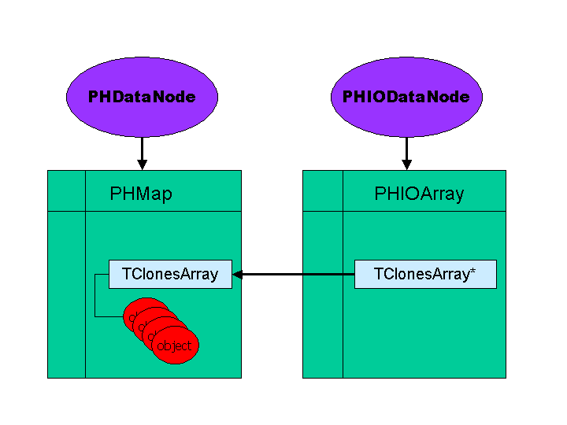

Why do we want a new framework ?
The basic reason to develop a replacement for the current MUTR
interfaces is to provide a software environment that enables
physicists to develop analysis software in an environment that is safe
(ie not error prone), easy to use, and promotes modularity.
The current MUON software is implemented using arrays of structures.
These offer no protection from data access errors (ie. reading beyond
an array bounds) and are arranged in a linear sequence that renders
looping so cumbersome that many of the current algorithms copy the
data into multi-dimensional structures for more convenient looping.
This makes the current code difficult to understand and maintain.
The new framework uses interface objects that offer protected data
access and replaces arrays with collections that facilitate looping
over subsets of objects.
What are the basics of interface objects in the new framework ?
IOs are required to meet the following criteria.
-
Interface objects must be simple enough to be ROOT-streamable using the rootcint generated streamers. At this writing this requirement translates
to no template data members with the exception of std::vectors of simple types. Given the somewhat draconian restrictions on objects imposed
by rootcint the strategy is to keep IOs simple and stupid and reserve all the smarts for Interface Object Containers (IOCs).
-
Interface objects must have an abstract base class (ABC) that contains no data members. This requirement is a simple acknowlegement that
interfaces will change over time and old code should be able to deal with evolving interfaces (a.k.a. schema evolution).
-
Interface objects must be keyed. That is, interface objects must inherit from PHKey. Interface object containers (IOCs) are ordered associative
containers, that is they provide a mapping from key to object and the ordering of the objects in the IOC is determined by the ordering of their keys.
In addition an object's key is essential in providing associations between objects. That is an association between an object A and objects B, C and D
is maintained by A holding the keys for objects B, C and D.
-
Data members that require an index or multiple indices in their accessors must be bounds checked and throw a standard exception in the
case that bounds are not respected. Since rootcint currently precludes the use of template data members with non-class template parameters
the use of a standard replacement for C-style arrays such as the BOOST library's Array is not an option. The solution that has been
implemented in MUTOO is C-style array data members protected by a BOUNDS_CHECK macro that can be conditionally compiled to a null-op
in NDEBUG releases.
What are the basics of interface object containers (IOCs)?
Interface object containers (IOCs) are in a loose sense analagous to C-style arrays. They provide storage for collections of objects,
and they provide an interface for sequentially accessing the objects that they contain. The analogy to C-style arrays holds up to this point in as
much as arrays offer access via pointer and since arrays are guaranteed to occupy contiguous memory, pointer arithmetic allows one to sequentially
access the objects in an array by with a simple array_ptr++. This is where the comparison ends. Although a pointer to an array meets the
basic criteria of an iterator it is inherently unsafe. There is nothing to prevent the user from happily ++'ing beyond the bounds of the array being pointed
to, and the pointer itelf (nor the array for that matter) has any notion of how long it is. Attempting to access beyond the bounds of an array is a
fundamental source of access violations in code that relies on unprotected access to C-style arrays.
- A basic feature of IOCs is that they offer access via bounded iterator, that is they provide an object interface that allows the user to
safely loop over the contents of the IOC and precludes the possibility that the iterator will be advanced beyond its domain of validity.
- IOCs are ordered, meaning that objects are ordered internally according to increasing key values. This feature allows the user to request
iterators that correspond to a range of keys. As a concrete example, an IOC can provide a get method that returns an iterator with bounds that correspond
to all the hits in a given subsection of a detector.
- Finally IOCs have clearly defined ownership semantics for the objects they contain, specifically they hold their objects via shared pointer.
Shared or reference counted pointers keep track of the number of outstanding pointers to the object they hold. When the reference count drops
to zero they deallocate resources associated with the object.
What are the basics of iterators ?
You can think of iterators as a safe pointer to a collection of objects. Iterators behave like pointers in as much as they support dereferencing via
the * and the -> operators and can be advanced via the ++ operator or the next method. Iterators used
in the MUTOO framework differ in two important ways from SL (Standard Library) iterators.
- MUTOO iterators are bounded. That is all iterators have a range [begin, end). When the iterator is brought into being, its current value
is equal to the beginning of its valid range. The iterator can be advanced until its current value is equal to the end of its range. Advancing an iterator
beyond the end of its valid range is protected via an exception for code that has been compiled in DEBUG mode.
ROOT style iteration over map elements.
\b Example
\code
#include
#include
int main(){
// Heap allocate a map. The user is *not* responsible
// for deleting the map.
//
PHMap* map = new PHMap();
for(int i=0; i<10; i++){
map->insert(i,1000+i);
}
// get an iterator with keys in range [2,5)
//
PHMapIterator::iterator iter = map->find(2,5);
// iterate over range
//
while(boost::shared_ptr* i = iter.next()){
std::cout << *(i->get()) << std::endl;
}
}
// output
//
1002
1003
1004
\endcode
- In MUTOO the object one gets back when dereferencing an iterator or invoking the next method is a shared pointer to the object
one wants to access. To get to the actual object one has to invoke an additional method, namely get. An often seen construction in
MUTOO code is shown below.
\code
TMutHitMap::iterator iter = hit_map->get(.....);
if(!iter.at_end())
{
iter->get()->get_q();
}
\endcode
How do I add a new analysis module ?
-
In the mutoo/modules directory copy the files mMutMyModule.cxx.template,
mMutMyModule.h.template and mMutMyModulePar.h.template, substituting the MyModule
with the appropriate name.
- Edit the Module.h to pull in necessary IOCs.
- Edit the set_interface_ptrs in the Module.cxx file to initialize the
IOCs from the node tree (See any existing module for an example).
- Edit the event method in the Module.cxx file to execute the desired functionality.
- Add your modules files to the mutoo/modules/Makefile.am
- cd mutoo_b, make install
- Assuming everything compiled okay, edit mutoo/preco/mutoofuncs.h and
mutoofuncs.cxx. Define the appropriate global module pointers in mutoofuncs.h
and instantiate the module in setup_all and add the module->event(..) call
in the desired place in the process_event method contained in mutoofuncs.cxx
How can I understand the associations between interface objects used for reconstruction ?
Interface object associations are maintained by storing lists of object keys. The graph below reflects a typical series of relationships between various
interface objects in a given station.
How can I understand the associations between interface objects used for simulation and evaluation?
What is the persistence model in the new framework ?
The model for interface object persistence accomodates rootcint imposed restrictions on streamable objects
while allowing the full power of C++ in the design of interface object containers. This is accomplished by explicitly
not requiring that IOCs themselves be streamable. IOCs can with the help of a template utility class
TMutMapIO populate a TClonesArray or TObjArray with their contents. The interface with the PHOOL node tree
is managed by the TMutNode class which offers statically scoped methods for setting up IOC for either non persistent
or persistent use. The PHOOL interface for persistent objects requires that they inherit from PHObject hence the
actual object that gets written to the mDST is a bridge object called PHIOArray. PHIOArray has a single data member
that is a pointer to a TClonesArray or TObjArray of interface objects and a few methods for accessing this array.
The PHIOArray class does not own the array, it simply serves to satisfy the PHOOL requirements.

What does the above FAQ entry mean to the user ?
In the preco setup_mutoo one the following.
\code
TMutHitMap* hit_map = TMutNode::new_node(mutoo_node, "TMutHitMap")
\endcode
This creates a new TMutHitMap IOC named "TMutHitMap" and appends it to
the node tree under mutoo_node.
\code
hit_map->make_persistent(dst_node,"TMutHit");
\endcode
This creates a PHIODataNode containing a PHIOArray named TMutHit and appends
it to the dst_node.
The user only interacts with the IOC TMutHitMap, if the make_persistent call
has been made for a given map the contents therin are transfered from the map
to the PHIOArray once per event and subsequently written to disk by calling
dst_node->Write().
*/